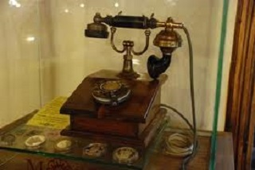
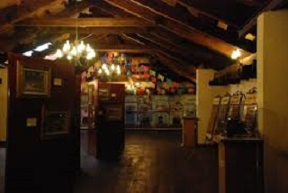
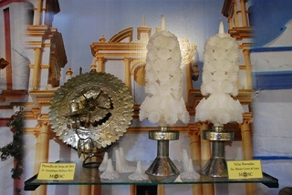
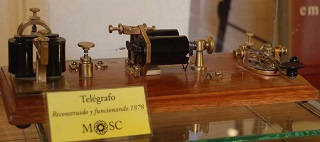
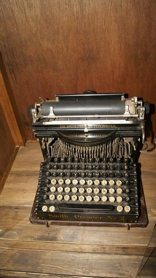

El Museo de Historia y Curiosidades de San Cristóbal promueve la cultura y la historia de la ciudad entre los jóvenes y niños, con lo que busca generar un acercamiento e identificación con las tradiciones y la magia de Jovel, mediante temas relacionados con la historia de San Cristóbal desde su fundación 1528-1973. La museografía incluye textos y exposiciones agradables, ligeras y de interés común, las cuales generen un conocimiento y permiten analizar la actualidad.
El museo expone los procesos de cómo llegaron a la ciudad los diversos adelantos de la época, como el primer periódico, la primer bicicleta, el primer carro, los diversos nombres que ha tenido la ciudad, los nombres del parque central. Exhibe piezas como una máquina de coser de 1914 y la marimba más pequeña; un fonógrafo Edison del año 1906 que aún funciona, las artesanías que elaboraban los barrios en el siglo XIX, así como uno de los primeros billetes del Banco de Chiapas.
En la sala de exposiciones temporales se encuentra una colección de trajes correspondientes a los grupos étnicos de Chiapas. En esta exposición se busca rescatar y transmitir la importancia de las culturas vivas del estado, con textos informativos en lenguas indígenas, trajes típicos casi desaparecidos y diversos utensilios usados en las actividades diarias de los grupos étnicos chiapanecos. También se expone una colección de fotografías del Sr. Vicente Kramsky, que permite a los visitantes observar a través de los años los cambios que ha tenido la ciudad.
Se encuentra ubicado en la calle diego de mazariegos a la altura de la iglesia de la merced.
Si usted se encuentra ubicado en la plaza de la paz viendo de frente hacia la catedral puede caminar hacia atrás como referencia encontrará frente a la plaza el asilo de ancianos San Juan de Dios camine sobre esa acera hasta llegar a la esquina pasando por Bancomer cruce la calle y continue caminando una cuadra mas pasando por scotiabank y al llegar a la esquina de vuelta a la derecha y camine aproximadamente 3 cuadras hasta encontrar el museo.
En el lugar usted puede practicar actividades como:
* Artesanía, compra de artesanía
* Históricos, visita a lugares histórico
* Fotografia
* Visitar Museos y Centros Culturales





posicione el mouse sobre las imágenes